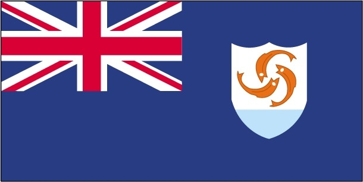
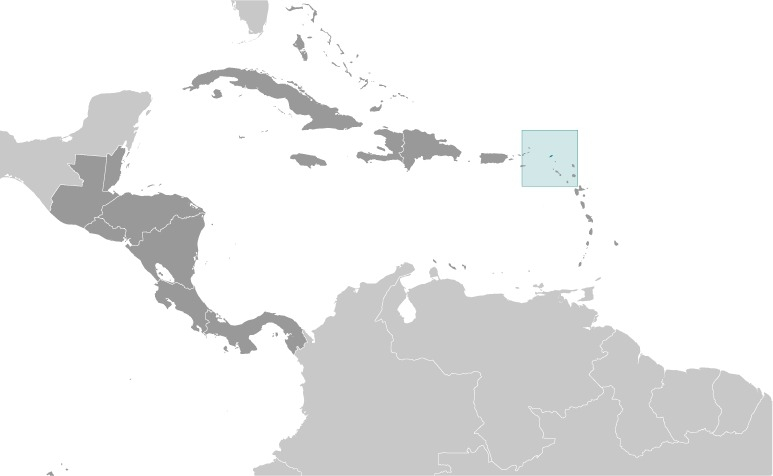

Introduction:
Colonized by English settlers from Saint Kitts in , Anguilla was administered by Great Britain until the early 19th century, when the island - against the wishes of the inhabitants - was incorporated into a single British dependency along with Saint Kitts and Nevis.
Several attempts at separation failed. In , two years after a revolt, Anguilla was finally allowed to secede; this arrangement was formally recognized in , with Anguilla becoming a separate British dependency.
On , the island suffered extensive damage from Hurricane Irma, particularly to communications and residential and business infrastructure.
Anguilla flag
Geography
Location
Caribbean, islands between the Caribbean Sea and North Atlantic Ocean, east of Puerto Rico.
Area
- Land: 91 sq km
- Water: 0 sq km
- Total: 91 sq km
Land use
- Agricultural land: 0% ( est.)
- Arable land: 0% ( est.)
- Permanent crops: 0% ( est.)
- Permanent pasture: 0% ( est.)
- Forest: 61.1% ( est.)
- Other: 38.9% ( est.)
People and Society
Ethnic groups
| Ethnicity | Percentage of population |
|---|---|
| African/Black | 85.3% |
| Hispanic | 4.9% |
| mixed | 3.8% |
| White | 3.2% |
| East Indian/Indian | 1% |
| other | 1.6% |
| unspecified | 0.3% |
( est.)
Religions
| Religion | percentage of population |
|---|---|
| Protestant | 73.2% |
| Roman Catholic | 6.8% |
| Jehovah's Witness | 1.1% |
| other Christian | 10.9% |
| other | 3.2% |
| unspecified | 0.3% |
| none | 4.5% |
( est.)
Population distribution
Most of the population is concentrated in The Valley in the center of the island; settlmement is fairly uniform in the southwest, but rather sparce in the northeast.
Transportation
National air transport system
- number of registered air carriers: 2 ()
- inventory of registered aircraft operated by air carriers: 4
Roadways
- total: 175 km
- paved: 82 km
- unpaved: 93 km ()
Ports and terminals
- Major seaport(s):
- Blowing Point, Road Bay